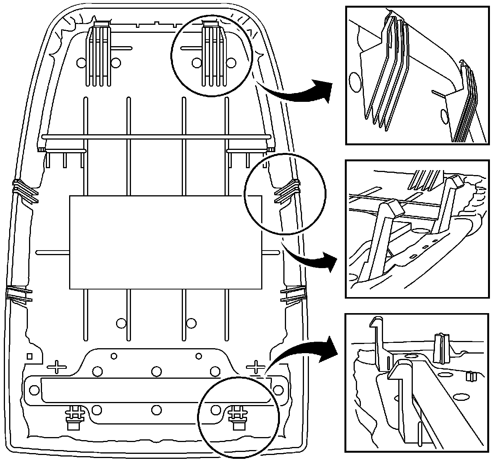
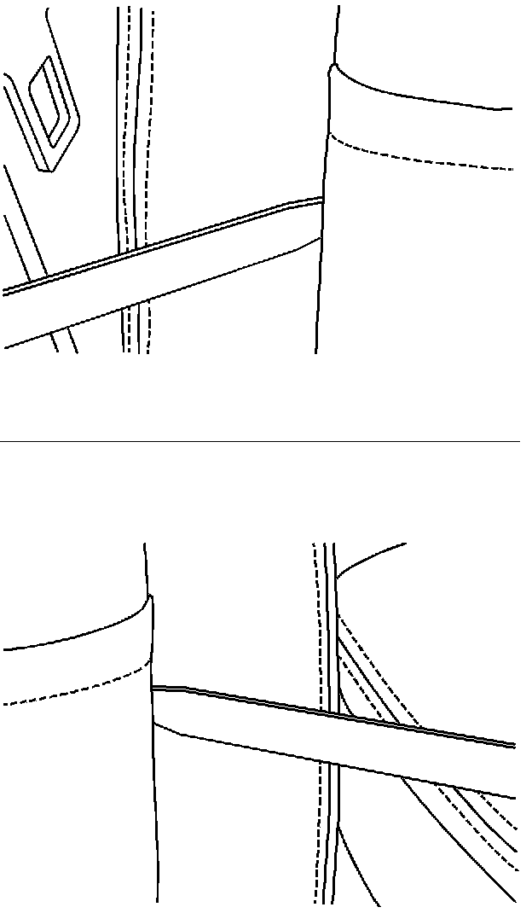
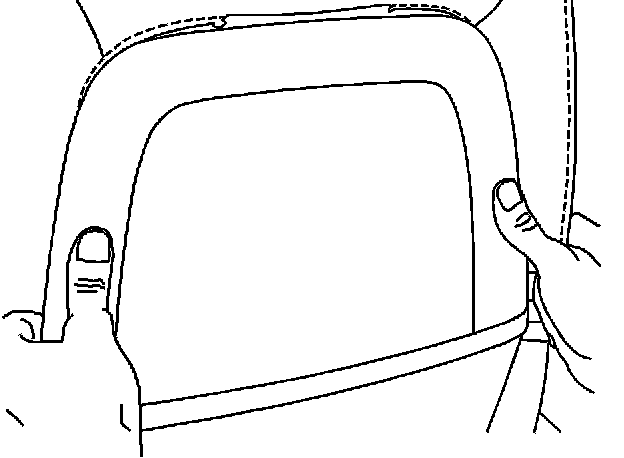
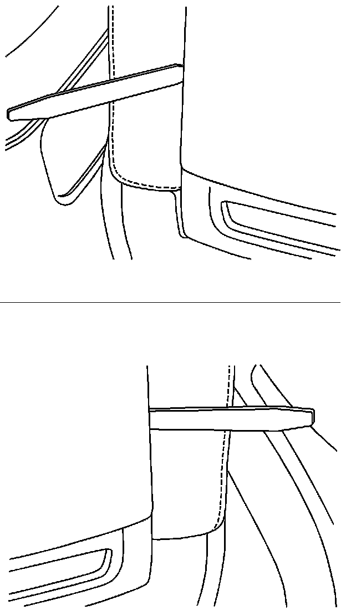
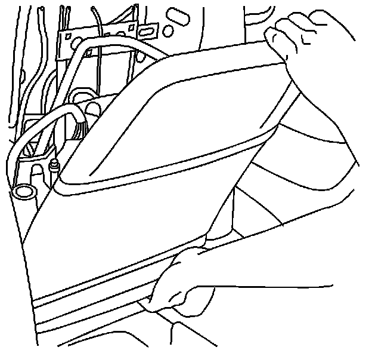
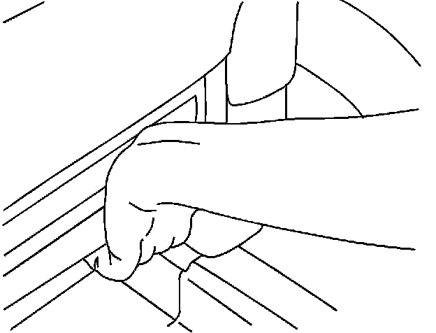
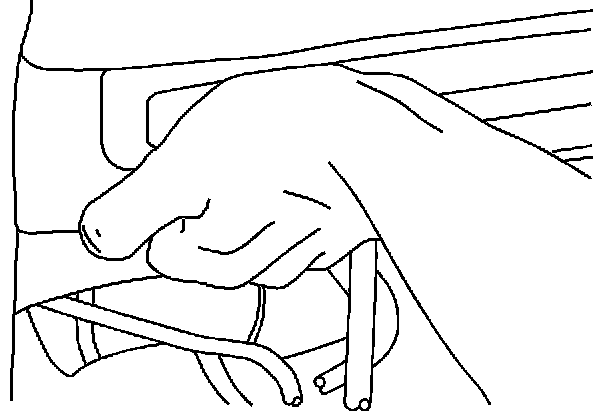

Interior - Proper Seat Back Removal procedure
Bulletin No.: 07-08-50-011Date: May 14, 2007
INFORMATION
Subject:
Information on Proper Procedure for Seatback Removal
Models:
2007 Cadillac Escalade Models
2007 Chevrolet Avalanche, Suburban, Tahoe
2007 GMC Yukon Models

This bulletin is being issued to provide the proper procedures whenever a seatback is removed or replaced. The seatback trim panel and retainers/tabs can be damaged if not disengaged and removed properly. Some seatback panels have been returned to the WPC with the retaining features broken. The following graphic shows the seatback tab locations.
Follow the procedure below in order to properly remove the seatback during service.

On the right and left side of the seatback, insert a flat-bladed tool in between the upper half of the seatback and the seat cushion to release the retainer tabs. Do not pry on the seatback with the tool.

Carefully bend the seatback outward in order to slide the top tabs out of the retainer slots.

On the right and left side of the seatback, insert a flat-bladed tool in between the lower half of the seatback and the seat cushion to release the retainer tabs.

Carefully pull back on the seatback and tilt outward as shown. Follow steps 5 and 6 to disengage the seatback at the bottom. All released tabs must be clear of obstructions.

On the bottom right side of the seatback, place your fingertips underneath the seatback. Apply a small amount of force inward with your palm in order to release the tab. Carefully lift up the right side of the seatback.

On the bottom left side of the seatback, place your fingertips underneath the seatback. Apply a small amount of force inward with your palm in order to release the tab. Carefully lift up the left side of the seatback.

Disclaimer